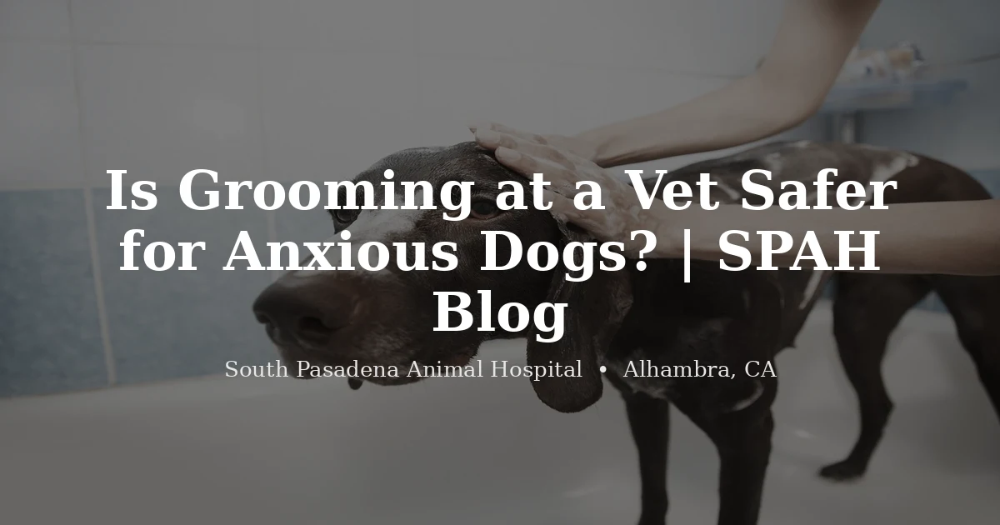

July 13, 2026 · 7 min read
Is Grooming at a Vet Safer for Anxious Dogs?

We should say the unhelpful thing first: most dogs do not need a veterinarian to give them a bath. If your dog trots happily into a salon on Main Street, stands on the table, and comes home looking great, that groomer is doing exactly what your dog needs and we'd tell you to keep going. Some of the best hands with a coat we've ever seen belong to people with no medical training at all. Grooming is a craft, and we're not going to pretend a DVM makes someone better at a teddy-bear trim.
So the question isn't really whether a vet grooms better. It's about which animals fall outside what a salon can safely take on — and that group is bigger than most owners realize, right up until their pet is in it.
The line isn't skill, it's what happens when things go sideways
Watch what actually changes in a clinic. Ninety percent of a groom is identical — same bath, same clippers, same brush-out. The difference is the other ten percent, and it only matters on the days it matters.
A nail gets quicked. In a salon that's styptic powder and an apology, which is usually fine. A dog panics halfway through and starts thrashing — now someone has to decide whether to keep going with a frightened animal or send them home half-shaved. A groomer shaves down a matted cat and finds a raw, weeping sore underneath. A senior dog gets wobbly on the table. None of these are exotic scenarios. They're Tuesday.
In a salon, each of those ends the same way: stop, call the owner, recommend a vet. That's the right call and a good groomer makes it. It just means the pet goes home unfinished, you book a second appointment somewhere else, and the thing that needed attention waits. When the groomer and the vet are in the same building, that whole detour collapses into someone walking down the hall.
Who we actually think should be at a clinic
Not everyone. If we listed every dog as a candidate we'd be doing the same overselling we're trying to avoid. But there are four groups where we'd genuinely push for it.
Pets who are frightened rather than just fussy. There's a real difference between a dog who grumbles about the dryer and a dog who is genuinely terrified — flattened, panting, urinating, trying to escape. Fear at that level isn't something to power through, and a frightened animal is a bite risk to the person holding them. In a clinic, our veterinarians can talk with you about calming options as part of the same visit instead of you making a separate trip to ask.
Severely matted cats. This is the big one, and it's the reason most owners end up calling a clinic. A cat matted to the skin sometimes cannot be shaved safely while awake — not because anyone lacks skill, but because a scared cat with clippers near tight mats is a genuinely dangerous combination for the cat and the person. Sedation makes it possible, and sedation is a medical decision that requires a veterinarian to examine the animal first. No salon can legally or safely do that. If your cat is in this shape, our cat grooming page walks through how we handle it.
Seniors and pets with health conditions. An arthritic dog can't stand comfortably for a long session. A pet with a heart or breathing condition doesn't handle stress the way a healthy three-year-old does. Flat-faced breeds — pugs, bulldogs, frenchies — get overheated and struggle to breathe under the stress of drying. We're not saying a salon can't groom these pets. We're saying a lot of salons would rather not, and they're not wrong to feel that way.
Pets a groomer has already turned away. If someone has told you they can't take your animal, believe them — that's a responsible person recognizing a limit. It's also the clearest signal there is that a clinic is your next call.
What we find when the coat comes off
Here's the part that surprises owners. Grooming is one of the only times anyone puts hands on every square inch of an animal, and that makes it accidentally one of the better health screens there is.
Lumps nobody knew about. Ear infections that had been brewing quietly. Fleas. Nails grown so long they'd changed how the dog was standing. Skin underneath a mat that's been damp and sore for weeks. Teeth you can finally see properly on a dog who normally won't allow it. We find things during grooming that had nothing to do with why the pet came in — and because we're a clinic, that becomes a conversation the same afternoon instead of a note to call someone later.
That's the whole argument, and we'd rather state it narrowly than oversell it. Grooming and medicine keep bumping into each other — usually in ways nobody needs a vet for, occasionally in ways where the hallway between the tub and the exam room saves a week.
How to decide
Be honest about which animal you have. A healthy, tolerant dog with a manageable coat — go to a good groomer, and go regularly. You'll be well served and it's the right fit.
If your pet is elderly, frightened, matted to the skin, managing a health condition, or has already been turned away by someone, that's when the building matters more than the haircut. Call us at (626) 441-1314 and describe what you're actually dealing with — the mats, the age, the thing that happened last time. We'll tell you honestly whether your pet needs what we offer or whether you're fine where you are, and we say the second one more often than you'd expect from a clinic with a grooming page to promote.
Questions we hear often
Is grooming at a vet safer than at a regular salon?
For a healthy, easygoing dog, a good salon is perfectly safe and we'd never suggest otherwise. The difference shows up at the edges — an anxious dog who panics on the table, a senior who can't stand comfortably, a badly matted cat, a pet with a heart or breathing condition. In those cases having a veterinary team in the same building means someone can step in immediately, and it means the groom can happen at all rather than being turned away.
What is sedated grooming and when is it needed?
It means a veterinarian gives medication so a pet can be groomed while calm and still. It's most often used for severely matted cats and for pets who become so distressed that grooming them awake risks injury to the animal or the handler. It's a medical decision made by a veterinarian after examining the pet — not something a salon can offer — and it isn't appropriate for every animal, which is exactly why it needs a vet's assessment.
My groomer refused to take my pet. What do I do?
This happens more than people realize, and it usually isn't the groomer being difficult — someone who feels a pet isn't safe to handle is making the right call. It comes up most with severely matted cats, fearful dogs, and elderly pets with health conditions. A veterinary setting is generally the next step, because the medical support that makes those cases workable is already in the building. Call and describe the situation and we'll tell you honestly whether we can help.
Can grooming catch health problems?
Often, yes — it's one of the few times anyone handles every inch of a pet. Skin lumps, ear infections, painful mats, overgrown nails, fleas, and dental problems all turn up during grooming. In a salon that means a note to call your vet. In a clinic it means a veterinarian can look the same day.
Does my dog need to be a patient at the clinic to be groomed there?
Not necessarily, though there's a real benefit when they are. When your dog is already a patient, the people bathing and clipping them can see the medical history — the allergies, the arthritic hips, the spot that's sensitive to the touch. Give us a call and we'll walk you through what your pet needs.